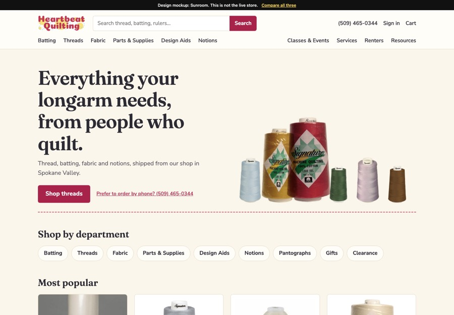
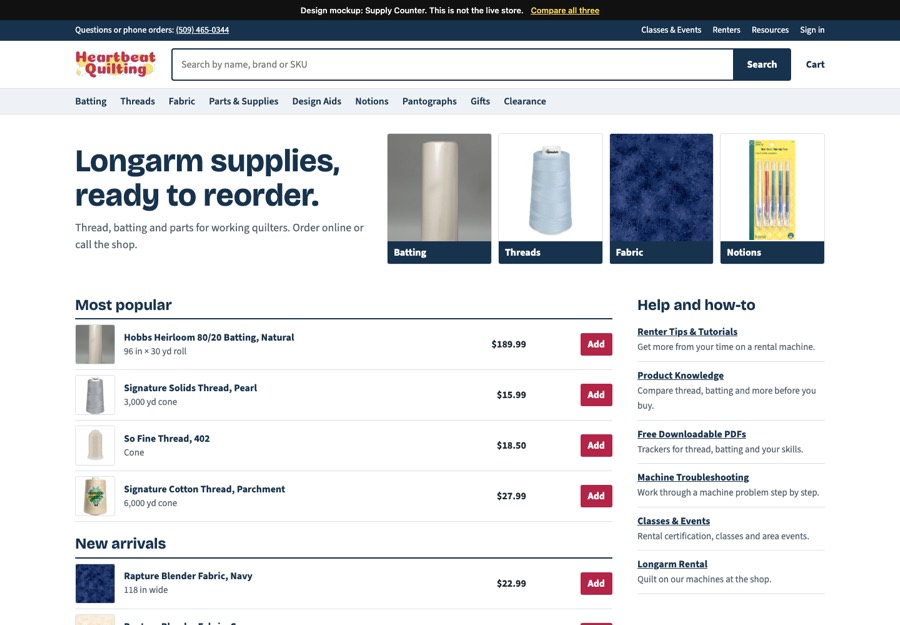
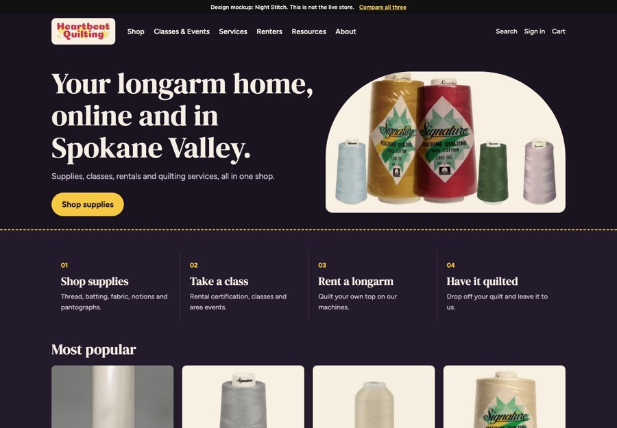

Sunroom
Warm, light and fabric-forward. Thread colors do the work, and it feels like walking into the shop.
Each one shows the homepage, a category page and a product page, using real products and prices. Links to other pages and the cart aren’t connected, but the thread filters and sorting work. Try them on your phone too.

Warm, light and fabric-forward. Thread colors do the work, and it feels like walking into the shop.

Clean, fast and practical. Search first, with dense lists and quick add for quilters who know what they need.

The boldest change: a dark, boutique feel in deep aubergine, with the logo’s yellow and products on cream tiles.
| “Under construction” notices | Removed. The first screen now says what you sell and how to order. |
|---|---|
| Text baked into a banner image | Replaced with real text that reads well on any screen. |
| No products or purpose on the first screen | The first screen now shows what you sell. |
| Two rows of mismatched red buttons | Replaced with clear sections for shopping, learning and services. |
| Very large header pushing everything down | Compact header with search always visible. |
| Light pink and gray text that is hard to read | All text meets standard contrast levels. |
| Low-contrast footer text and a stray “WWW” | Rebuilt, readable footer with contact details and help links. |
| Product photos at different sizes | Every product photo sits in a matching frame. |
| No way to narrow six pages of thread | Working color and cone size filters, plus sorting. |
| Codes like HLBY-96 and Pearl 3K | Clear names, written from your own product descriptions. |
| Thin product pages | Details table, color choices, and help by phone. |
| Outdated Twitter icon, gray empty stars, long breadcrumbs | Removed or shortened. |
| Blank main heading, missing image descriptions | Every page has a heading, and images are described. |
| Resources buried | Tutorials, PDFs, troubleshooting and services are brought forward. |